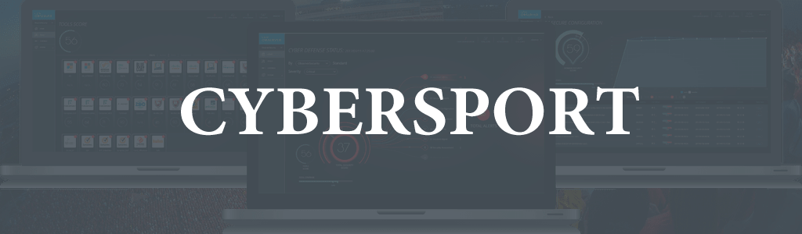

<!DOCTYPE html>
<html lang="en">
<head>
	<meta charset="UTF-8">
	<title>Cyber</title>
</head>
<body>
	
</body>
</html>DOCTYPE html>
<html>
<head>
	<title>Cybersport</title>
	<meta charset="utf-8">
	<link rel="stylesheet" type="text/css" href="css/style.css">
</head>
<style>


@keyframes example {
	from {background-color: #80bfff;}
	to {background-color: #59848D;}
}

body
{
	background-color: #6898A2 
}


nav {
	margin: 0;
	background-color: #59848D;
	top: 0;
	width: 100%;
	position: fixed;
}
nav img {
	float: right;
	background-color: #59848D;
	animation-name: example;
	animation-duration: 4s;
}
nav ul {
	padding:0;
	margin:0;
	list-style: none;
	position: relative;
}
nav ul li {
	margin: 0px 30px 0 0;
	display:inline-block;
	background-color: #59848D
}
nav a {
	display:block;
	padding:0 10px;
	color:#FFFFFF;
	font-size:20px;
	line-height: 60px;
	text-decoration:none;
}


nav a:hover {
	background-color: #80bfff;
	transform: scale(1.2);

}
nav ul ul {
	display: none;
	position: absolute;
	top: 100%;
}
nav ul li:hover  ul {
	display:inherit;
	transform: scale(1.2);

}
nav ul ul li {
	min-width:170px;
	float:none;
	display:list-item;
	position: relative;
}
a:hover {
	background-color: #000000;
	transform: scale(1.2);
}
#logo {
	margin-left: 440px;
	margin-top: 70px;
	
}
main h1{
	text-align: center;
	font-size: 54px;
	color: #FFFFFF;
	font-family: Comic Sans MS;
	animation-duration: 3s;
	animation-name: slidein;
}


#history {
	width: 100%;
	height: 300px;
	background: #59848D;
	border-radius: 15px;
}


#last_match {
	width: 100%;
	height: 300px;
	background: #59848D;
	border-radius: 15px;
}

#lv {
	margin-left: 500px;
	margin-top: -100px;
}

#ol {
	margin-left: 100px;
	margin-top: -100px;
}
footer {
	width: 100%;
	height: 100px;
	background: #59848D;
	margin-top: 20px;
}
</style>

<body>

	<nav>
		<div>
			
		</div>
		<ul>
			<li><a href="#">Main</a></li>
			<li><a href="#">Matches</a>
				<ul>
					<li><a href="index1.html">Calendar of tournaments</a></li>
					<li><a href="">Next games</a></li>
					<li><a href="">Ratings</a></li>
				</ul>
			</li>
			<li><a href="#">News</a></li>
			<li><a href="#">Fans</a></li>
			<li><a href="#">Contacts</a></li>
			<li><a href="#">Admin</a></li>
		</ul>
	</nav>

	<main>
		<div>
			
		</div>
		<h1>Кіберспорт, як стиль життя</h1>
		<div id="history">
			<h2 style="text-align: center; color: #FFFFFF; font-size: 48px;">Історія</h2>
			<strong>
				<p align="center" style="font-size:17px; color: #FFFFFF">Спортивні змагання з відеоігор. Історія електронного спорту почалася з гри Quake, яка мала режим мережевої гри через LAN або інтернет. Завдяки популярності гри Doom, в 1997 році в США з'явилася перша ліга електронного спорту — Cyberathlete Professional League (CPL)[1]. Відтоді з'явилося багато нових ліг із кіберспорту.Змагання з кіберспорту, зокрема міжнародні, проводяться по всьому світу.Великі змагання проводяться в спеціальних місцях, де публіка може спостерігати за гравцями, що сидять за комп'ютерами, а хід змагань можна відстежувати на великому екрані, де транслюється ігровий процес. Менш масштабні змагання відбуваються в комп'ютерних клубах. Крім того, змагання можуть проводитися через інтернет.Гра через інтернет має низку недоліків. У різних гравців можуть бути неоднакові затримки передачі інформації через глобальну мережу в зв'язку з її неоднорідністю. Під час гри через Інтернет складно виявити шахрайство гравців. Натомість, під час гри через локальну мережу всі гравці присутні в одному приміщенні під наглядом організаторів змагання, тому шахраювати набагато важче. Локальна мережа зводить нанівець і проблему затримок, оскільки має достатню й однакову для всіх пропускну здатність.На важливих змаганнях призовий фонд може сягати значних сум. Найбільший приз в історії кіберспортивних змагань виграла команда Team Liquid, яка перемогла у фіналі чемпіонату The International 2017 з дисципліни Dota 2, отримавши $10 824 322.На щорічному змаганні The International із гри Dota 2 в 2011 році перше місце здобула українська команда Natus Vincere, отримавши приз розміром у 1 000 000 доларів.</p>
			</strong>
		</div><br>

		<div id="last_match">
			<h2 style="text-align: center; color: #FFFFFF; font-size: 48px;">Остання значима гра</h2>
			<p style="text-align: center; color: #FFFFFF; font-size: 20px;">06.08.2018, м.Ванкувер стадіон "Роджер-Арена" OV vs PSG.LGD  дисципліни DOTA 2</p>
			<p style="text-align: center; padding-top: 40px; color: #FFFFFF; font-size: 24px;"><strong>3:2</strong></p>
			
			
		</div>
	</main>

	<footer>

		<div class="legal_footer" style="padding-left: 50px">
			
			&copy; Valve Corporation, all rights reserved. Valve, the Valve logo, Steam, the Steam logo, Source, the Source logo, Valve Source and Dota are trademarks and/or registered trademarks of Valve Corporation. 
		</div>
	</footer>

</body>
</html>